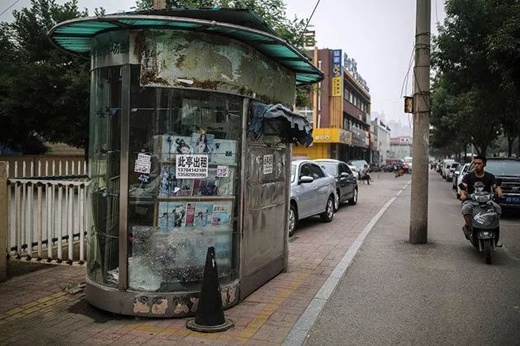
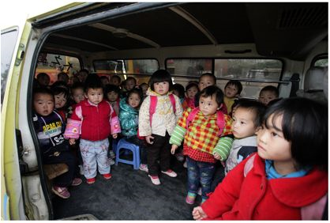
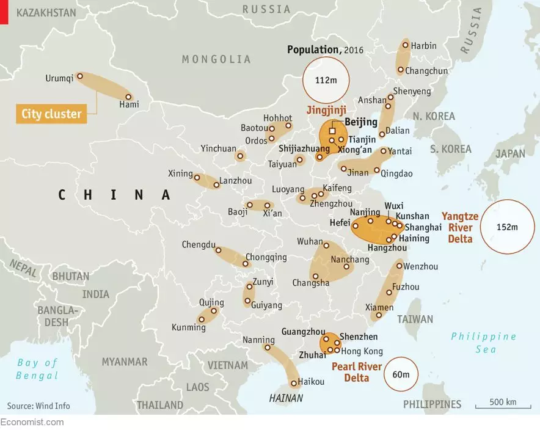

本期主题：新闻已死否

真正的新闻正在死去，更可怕的是无人在意
原文摘录：
- 今天的新闻媒体在对涉及重大公共利益的事件报道方面的能力，已经衰退到了何种地步！
- 今年1月上旬，一艘伊朗油轮在长江口以东约160海里处与一艘中国散货船相撞，导致油轮起火，30名水手失踪。10多天以后，这艘伊朗油轮爆炸沉没，并造成100平方公里油污带……这期间，我看到许多外媒连续报道了此事。但由于事发在中国，事发地又在海上，这些报道大多语焉不详。让我感到震惊的是，这么大的一起公共灾难，全世界媒体都在努力试图探究原委，但中国国内媒体，除了《财新周刊》等极少数几家，几乎不见只字片语！就发生在上海边上的事，上海的老百姓好像也无人关心，甚至自媒体上道听途说的文章及微信朋友圈里的转发的小道消息都极少。
- 我只是想要指出这样一个需要重视和忧虑的客观事实：在这个新媒体雨后春笋般涌现出来的生机蓬勃的新时代，中国的新闻生产及新闻产品的质量变得更糟了，而不是更好了。
- 随着时代和技术的变迁，传统媒体所依赖的“内容-受众-广告”模式日益不再能够支撑它庞大的成本支出，变得难以维系，传统媒体也不可避免地衰败了。经济上的雪崩式滑坡导致了一个恶性循环：削减开支使优质内容的新闻更不可能产生，降低成本使越来越多这个行内的优秀人才流失，而它们又使传统媒体的受众也越来越萎缩，自然广告收入就更少……
- 传统媒体的衰败、自媒体的碎片化与公众注意力的漫不经心，可能是一个互为因果的关系。
- 真正的新闻，未来会成为一种“公共产品”——它不可或缺，但又无法直接产生经济收益从而维持自身运转。于是，它就需要有人出钱来供养着。
- 瑞典政府一直对报纸给予直接或间接的补贴。政府这么做的理据是：报纸是民主政治不可或缺的重要工具。
- 瑞典政府对报纸的补贴，与报纸的内容倾向毫无关系，后者是政府绝对不能干涉的。
- 瑞典政府发放补贴的指导原则是看是否能够促进报纸竞争，从而增加言论的多元化。
Javalover93：
没啥动机，就是各个新闻客户端都用起来不满意。头条更是令人恶心，推荐算法和新闻如何发生关系？你关心的就是头条？特别是当他推荐了一堆奇奇怪怪的东西。

在隔壁的中国，那些孩子已经长大了
原文摘录：
- 他们通常会本能地拒绝那个与他们观念不符的世界的一切信息，这样，他们的幸福和平静才会是心安理得的。所以，大家普遍的心态是，你说的我知道，为什么非要给我们讲这个？讲点不负面的不行吗？
- 这种心态并不只是体制内的人的心态，而是中国中产阶级的普遍心态。
- 一刀切的「撤点并校」，带来了四个社会问题：
- 一、校车安全
- 二、寄宿问题
- 三、家长陪读
- 四、贫困辍学
Javalover93:
从校车安全问题入手，分析了「撤点并校」的原因、对教育的影响、对下一代发展的影响。更加惊醒的是，这一切都发生在“隔壁的中国”，大部分人对其充耳不闻。包括我。
没看到这篇文章，我真的是不知道「撤点并校」是一件系统的事情，哪怕这件事情的的确确地在我家乡发生了，而且恰巧是撤了我的小学1，并到我的小学2。完全无法做文摘，逻辑缜密，一摘就是全文转载了。
看到此文后几周，偶然瞄了几眼罗永浩的自传，此文刚好就是罗声称的最佩服的记者黄章晋。
实际上，它才是全宇宙做外宣最厉害的国家
原文摘录：这种战斗力满满的外宣机构，也难怪普京在油价下行、国内经济萎靡的时候，不仅禁止RT自削财政预算，还要砸更多的钱进去，同时减低国内媒体的开支。
安替：新新闻人自学手册全集
Javalover93:
此文发于 2008年3月21日。自述了成为记者的原因，更重要的是，给出了一堆的新闻资讯来源。有趣的是，10年前的方法，貌似现在仍然可用。最有趣的是，作者还在文中普及链接的意思。算起来，作者至少做了17年的记者，不知现在还在坚持否。

经济学人:19个超级城市群，中国描绘国家新蓝图
原文摘录：
- 到2030年，世界上五分之一的城市居民都将是中国人。但这种高速增长也存在问题。政策限制了外来人口获得当地公共服务的权利，这就意味着约2.5亿暂居城市的人沦为二等公民。
- 总共规划建设19个城市群，也就是19个经济体。中国将集中成由这些超级城市群组成的国家。其中三个已经步入正轨：临近香港的珠三角城市群；围绕上海的长三角城市群；以北京为核心的京津冀城市群。
- 每周一和周五她在无锡化工厂进行检测工作，而周二到周四她会去上海的公司总部。她可以在两个城市中的任意一个落脚，但无锡的生活成本要比上海低得多。…… 一旦胡小姐所在的长三角城市群打造完成后将容纳1.5亿人，几乎是东京城市群的4倍。中国计划打造的最大的5个城市集群的平均人口是1.1亿。
- 运输连线、尤其是城际动车的运行速度。这扩大了中国城市群的可覆盖范围。海宁（长江三角洲的一个小城市）的房价翻番在一定程度上与该市新开建的城际铁路有关。就职于海宁万城房产的任永胜（音译）表示：“我们衡量距离的方式从空间转变成了时间。”
- 在政府干预方面，中国比大多数国家都要手段强硬。为鼓励人们分散到城市群的各处，中国政府提高了人们取得富裕城市户口或居住证的门槛，而降低了进入这些富裕城市附近的小城市的门槛。
- 城市群这一概念根植于产业集聚理论，该理论认为城市越大，其产出越高。
- 而在中国，这一潜在获益会更大，或许这是因为其城市人口密度低得惊人。 以中国的较拥挤城市广州为例，世界银行曾说，如果广州的人口密度与首尔相同，它将能在其现有的土地上再容纳420万人。
- 纽约大学的阿兰·柏图认为，倘若整合得当，中国的城市群能借其体积优势实现其他国家从未达到过的生产率。他表示，届时，中国在生产率上领先于其他国家的差距，将能媲美于工业革命时期英国在生产率上领先于其他国家的差距。
- 建设超高生产率中国城市群的想法就现在而言还是白日做梦。
- 今年一月，长三角地区为区域协调建立了办事处，是中国国内开设的第一间处理区域协调事务的办事处。但这只是一个小机构，不过十几个人。
Javalover93:
初次听说城市群，肯定是在高中地理课上啦。但是现实中首次接触是在既有时间又有想法的初入大学时，当年有个想法是按照地理区块逐个观察城市或者城市群，然后选择一个毕业后去。后来，自然完全没有开展。然后毕业后就随意找份工作了。
2人成群的城市群，有些令人担忧啊。
附上英文地址：https://www.economist.com/china/2018/06/23/china-is-trying-to-turn-itself-into-a-country-of-19-super-regions?fsrc=rss
中国致力于打造全球电网
原文摘录：特高压输电技术让中国得以在多山的内陆地区建大量水坝，然后将电力输送到数千公里以外富裕、工业发达的东部沿海地区。然而，启动该计划和其他项目后，特高压输电技术造成中国西部电力严重过剩，以至于在2016年，刘振亚提出利用这项技术把电力输送到远至德国的地方。
Javalover93:
原文载于 FT中文网，但是时间一久就开启收费模式了，找了个盗版链接。所以，要及时保存啊。